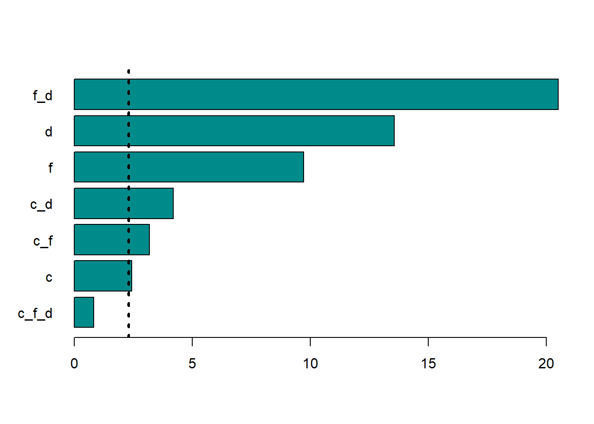
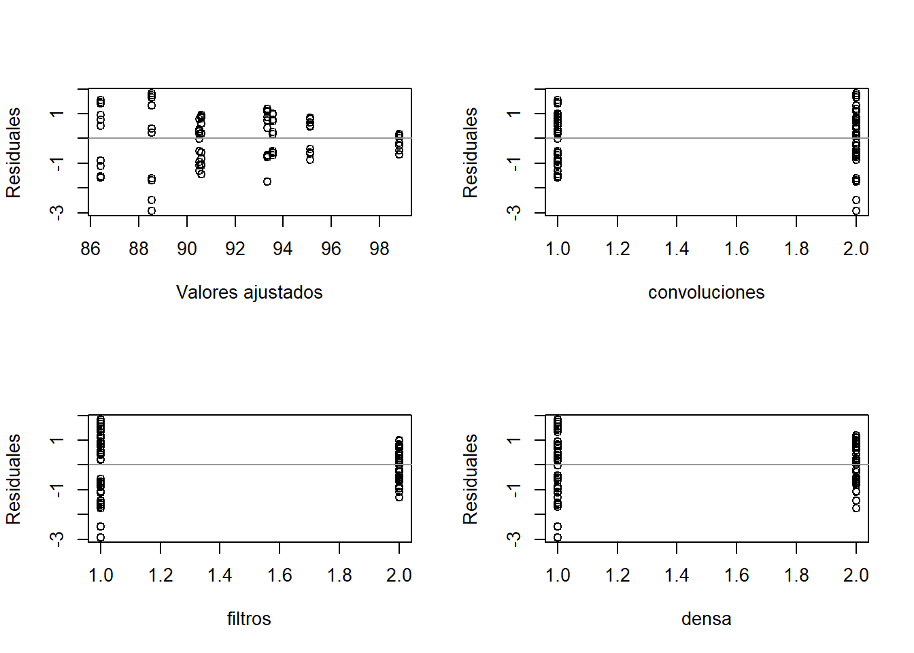

# A tibble: 50 × 6
orden tratamiento convoluciones filtros densa exactitud
<dbl> <chr> <fct> <fct> <fct> <dbl>
1 1 C1_F4_D64 1 4 64 81.0
2 2 C1_F4_D128 1 4 128 85.4
3 3 C1_F16_D64 1 16 64 85.9
4 4 C1_F16_D128 1 16 128 90.9
5 5 C2_F4_D64 2 4 64 76.5
6 6 C2_F4_D128 2 4 128 84.9
7 7 C2_F16_D64 2 16 64 92.3
8 8 C2_F16_D128 2 16 128 96.5
9 9 C1_F4_D64 1 4 64 82.1
10 10 C1_F4_D128 1 4 128 86.7
# ℹ 40 more rowsDiseño factorial
Juan Carlos Gaviria Chaverra, Andrés Orlando López Henao
1. Plan y ejecución del experimento
1.1. Título del experimento
Influencia de la arquitectura de redes neuronales convolucionales en la exactitud de predicción de señales de tránsito.
1.2. Objetivos
Evaluar cómo diferentes arquitecturas de redes neuronales convolucionales afectan la exactitud de predicción de señales de tránsito.
1.3. Marco teórico
Se ha observado un incremento significativo en la cantidad de fatalidades ocasionadas por percances automovilísticos a nivel global, siendo la causa primordial la falta de familiaridad con las indicaciones viales y las vías, aunque la razón más común es en parte el desconocimiento de ciertas señales viales específicas (OMS, 2022). Los incidentes de tránsito representan para la mayoría de las naciones un 3% de su producto interno bruto (PIB). Entre los años 2015 y 2030, se estima que estos incidentes tendrán un costo para la economía mundial de 1,8 billones de dólares, lo que equivale al 0,12% del PIB global (Al-Rousan et al., 2021). El aprendizaje automático consiste en un conjunto de técnicas y procedimientos destinados a generar inteligencia artificial mediante el uso de algoritmos y grandes volúmenes de datos con el fin de simular el proceso de aprendizaje (Gu et al., 2108). El aprendizaje profundo, como una subdivisión del aprendizaje automático, se basa en arquitecturas de redes neuronales con múltiples capas internas, tales como las Redes Neuronales Convolucionales (CNN) (Indolia et al., 2018). La identificación de señales de tráfico (TSR por sus siglas en inglés) constituye una tarea de visión artificial y aprendizaje automático que implica el reconocimiento y clasificación de señales de tráfico a partir de imágenes o secuencias de video (Liu et al., 2019). Los algoritmos de visión artificial para la detección de señales de tráfico se relacionan directamente con sus atributos distintivos. Principalmente, las señales de tráfico adoptan formas como triángulos, rectángulos, círculos u octágonos, además de presentar colores (Sheikah et al., 2016). Los colores empleados en las señales de tráfico suelen ser colores básicos como rojo, azul, negro, blanco, amarillo y, de forma menos frecuente, verde. Por ende, los enfoques de detección se clasifican principalmente en métodos basados en color y forma para determinar la característica de la imagen (Fan y Zhang, 2015). En el contexto de la visión por computadora, el reconocimiento de imágenes se refiere a la habilidad del software para identificar elementos, individuos, lugares, escritos y actividades en imágenes. Para llevar a cabo dicha identificación, los sistemas computacionales pueden emplear tecnologías de visión por computadora en combinación con cámaras y software basado en inteligencia artificial. (SearchEnterpriseAI).
1.4. Variable respuesta
Para el experimento, la variable respuesta es:
Variable: Exactitud de predicción.
Valores usuales de operación: Entre 0 y 100.
Precisión de medición: Porcentaje.
Instrumento de medida: Computador.
1.5. Variables de control
A continuación se describen las variables de control del experimento:
Tabla 1. Variables de control
| Variable | Valores usuales de operación | Precisión de medición | Instrumento de medida | Configuración propuesta | Efecto predicho |
|---|---|---|---|---|---|
| Convoluciones | Entre 1 y 10 | Número entero | No aplica | [1, 2] | La exactitud de predicción aumentará a mayor número de convoluciones. |
| Filtros | Entre 1 y 100 | Número entero | No aplica | [4, 16] | La exactitud de predicción aumentará a mayor número de filtros. |
| Densa | Entre 1 y 1000 | Número entero | No aplica | [65, 128] | La exactitud de predicción aumentará a mayor número de neuronas en la capa densa. |
1.6. Factores controlables
En las tablas 2 y 3 se presentan los factores que se mantendrán constantes durante el experimento:
Tabla 2. Factores externos al modelo CNN
| Variable | Nivel deseado | Precisión de medición | Instrumento de medida | Control | Impacto esperado |
|---|---|---|---|---|---|
| Dataset | Superior a 70000 | Imágenes de 32x32 píxeles | No aplica | Se usarán las mismas 58511 imágenes de entrenamiento y 14630 imágenes de validación para todos los modelos | Obtención de una mejor comprensión de cómo diferentes configuraciones afectan el rendimiento del modelo, con el fin de identificar la arquitectura más adecuada para mejorar la exactitud predictiva. |
Tabla 3. Factores internos del modelo CNN
| Variable | Nivel deseado | Precisión de medición | Instrumento de medida | Control | Impacto esperado |
|---|---|---|---|---|---|
| Funcion de activación | Depende de la función seleccionada | No aplica | No aplica | Se aplicará la función de activación RELU para las capas convolucionales y la primera capa densa, y softwax para la última capa. | Obtenención de una consistencia en el comportamiento de los modelos y en una extracción de características más uniforme a lo largo de las capas. |
| Compilación del modelo | No aplica | No aplica | No aplica | Se usarán los parametros: loss=‘binary_crossentropy’ optimizer=‘adam’ metrics=[‘accuracy’] |
Aseguramiento de la coherencia en el proceso de entrenamiento y evaluación. Esto garantiza que todos los modelos sean entrenados y evaluados de manera similar, facilitando la comparación de sus desempeños y simplificando la gestión de los experimentos de aprendizaje automático. |
1.7. Factores no controlables
A continuación se describen en las tablas 4 y 5 los factores que no se mantendrán constantes durante el experimento:
Tabla 4. Factores externos al modelo CNN
| Variable | Nivel deseado | Precisión de medición | Instrumento de medida | Estrategia | Efectos anticipados |
|---|---|---|---|---|---|
| Procesamiento computacional | No aplica | No aplica | No aplica | Uso de configuraciones idénticas de hardware | Variación en el tiempo de procesamiento, limitando el número de muestras a tomar. |
| Tiempo de entrenamiento por modelo | Entre 0 y 60 | Minutos | Cronómetro | Uso de configuraciones idénticas de hardware | Limitación en el número de muestras a tomar. |
Tabla 5. Factores internos modelo CNN
| Variable | Nivel deseado | Precisión de medición | Instrumento de medida | Estrategia | Efectos anticipados |
|---|---|---|---|---|---|
| Pesos | Entre 0 y 1 | Número real | No aplica | Inicialización aleatoria | La inicialización aleatoria de pesos en una red neuronal convolucional promueve la diversidad desde el inicio del entrenamiento, ayudando a evitar mínimos locales y aumentando la capacidad del modelo para adaptarse a diferentes conjuntos de datos. Esto mejora la capacidad de generalización y la robustez del modelo. |
1.8. Interacciones
Interacción entre el número de convoluciones y el número de filtros.
Interacción entre el número de convoluciones y el número de neuronas de la capa densa.
Interacción entre el número de filtros y el número de neuronas de la capa densa.
Interacción entre el número de convoluciones, el número de filtros y el número de neuronas de la capa densa.
1.9. Restricciones
Debido a los altos requisitos computacionales de los experimentos con redes neuronales convolucionales, fue necesario utilizar el servicio en la nube Google Colab. Tanto en sus versiones gratuitas como de pago, este servicio impone límites en el tiempo de ejecución. Cuando se agota este tiempo, es necesario esperar hasta el día siguiente para continuar. Por lo tanto, la principal limitación fue el tiempo de procesamiento proporcionado por el servicio, considerando un tiempo estimado de 10 minutos para el entrenamiento de cada modelo. Dado que se planeaba realizar pruebas con 8 modelos y realizar 10 ejecuciones de cada uno, se requerían al menos 14 horas de tiempo de computación.
1.10. Diseño
Se utilizará un diseño factorial el cual involucra tres factores: el numero de convoluciones, numero de filtros aplicados a cada convolucion y el numero de neuronas de la capa densa con lo cual se logrará medir el reconocimiento de señales de tráficos (TSDR) mediante el uso de una red neuronal convolucional (CNN) para determinar la significancia estadística de los efectos de los factores y sus interacciones para comprender como influyen en conjunto en la esactitud de la prediccion de la red neuronal al reconocer las imagenes de tránsito
Factores:
Para el experimento se tomaron los siguientes factores:
Convoluciones: Número de convoluciones
Filtros: Número de filtros aplicados en cada convolución
Densa: Número de neuronas de la capa densa final de la red neuronal
Tratamientos:
La nomenclatura usada para identificar cada tratamiento es Cx_Fy_Dz donde: x representa el número de convoluciones, y representa número de filtros y z el numero de neuronas de la capa densa. De la combinación de los niveles de los factores, convoluciones, filtros y neuronas de la capa densa surgen los siguientes 8 tratamientos.
Tabla 6. Tratamientos
| Identificador | Convoluciones | Filtros | Neuronas capa densa |
|---|---|---|---|
| C1_F4_D64 | 1 | 4 | 64 |
| C1_F4_D128 | 1 | 4 | 128 |
| C1_F16_D64 | 1 | 16 | 64 |
| C1_F16_D128 | 1 | 16 | 128 |
| C2_F4_D64 | 2 | 4 | 64 |
| C2_F4_D128 | 2 | 4 | 128 |
| C2_F16_D64 | 2 | 16 | 64 |
| C2_F16_D128 | 2 | 16 | 128 |
Materiales:
Entorno de ejecución: Google colab
Lenguaje de programación: Python (TensorFlow y Keras)
Conjunto de datos: https://www.kaggle.com/datasets/flo2607/traffic-signs-classification
Herramientas de análisis estadístico: Lenguaje de programación R
Documentación y registro: Información de acceso libre
Procedimiento:
Definición de los factores
Determinar los niveles de los factores
Diseño del experimento factorial
Entrenamiento y evaluación de la CNN
Realización del análisis factorial:
Optimización y validación
Iteración y refinamiento
Análisis de Datos: Analizar la exactitud de los modelos para cada una de las configuraciones de la CNN que permitan establecer las interacciones que brinden los mejores porcentajes de predicción de las imágenes de tráfico dentro del diseño de análisis factorial de nivel
Hipótesis:
Hipótesis de efecto principal: Las convulsiones, filtros y densas no tienen efectos principales significativos sobre la exactitud de la red neuronal convolucional (CNN).
Hipótesis de interacciones: Las interacciones entre los diferentes factores no afectan conjuntamente el la exactitud de la red neuronal convolucional (CNN).
Hipótesis de no linealidad: Los efectos de los factores son lineales.
Hipótesis de optimización: No existe una combinación optima de factoresque maximice la exactitud de la red neuronal convolucional.
Resultados Esperados:
Efectos principales: Se espera que ciertos factores tengan impactos significativos en la exactitud de la red neuronal convolucional.
Interacciones entre factores: Se espera que se encuentren diferencias significativas entre los factores.
Tendencias no lineales: Quelos efectos de ciertos factores no sean lineales.
Configuraciones optimas: Quelas configuraciones optimas maximicen la exactitud de la red neuronal convolucional.
1.11. Descripción
La técnica de análisis y presentación utilizada en este experimento de 3 factores se basa en una combinación de herramientas estadísticas y gráficas diseñadas para explorar y comunicar los resultados de manera efectiva.
Gráficas Se utilizan histogramas para visualizar la distribución de los datos en cada tratamiento, lo que permite una comprensión rápida de la forma y la dispersión de los datos. Los gráficos de cajas para comparar la distribución de los datos entre los diferentes tratamientos, mostrando la mediana, los cuartiles y los valores atípicos y los gráficos de dispersión para explorar la relación entre variables, como los valores ajustados y los residuos.
ANOVAs: Se realiza un ANOVA para comparar las medias de los tratamientos y determinar si hay diferencias significativas entre ellos. Se evalúa la significancia estadística, lo que proporciona información sobre la variabilidad entre los tratamientos en relación con la variabilidad dentro de los tratamientos. Después de realizar el ANOVA, se realiza la prueba Tukey como una prueba para comparar todas las combinaciones posibles de pares de tratamientos y determinar qué diferencias son significativas.
Modelos de Efectos, Medias y Regresión: Se utilizan diferentes modelos para analizar los datos según la pregunta de investigación. El modelo de efectos considera cada tratamiento como un factor independiente, mientras que el modelo de medias agrupa los tratamientos y compara las medias globales. El modelo de regresión permite explorar la relación entre la variable dependiente y las variables independientes.
Pruebas de Homocedasticidad y Normalidad: Se realizan pruebas de homocedasticidad para evaluar si la varianza de los residuos es constante en todos los tratamientos.
Las pruebas de normalidad Anderson-Darling, Shapiro-Wilk, Jarque-Bera, Kolmogorov-Smirnov se utilizarán para verificar si los residuos siguen una distribución normal.
Valores Ajustados vs Residuales e Independencia de Errores: Con las pruebas Levene, Bartlett, Breusch-Pagan y Durbin-Watson, Se examina la relación entre los valores ajustados y los residuos para evaluar la idoneidad del modelo. Además, se verifica la independencia de errores para garantizar que los errores no estén correlacionados entre sí
Comparación entre Tratamientos: Se realizan comparaciones entre tratamientos utilizando los métodos de la diferencia significativa menos significativa (LSD) y la diferencia significativa honesta (HSD) para identificar las diferencias significativas entre los tratamientos y agruparlos en categorías homogéneas.
En resumen, esta técnica de análisis y presentación utiliza una variedad de herramientas estadísticas y gráficas para explorar y comunicar los resultados de manera efectiva en un experimento de 1 factor con 4 tratamientos. Se enfoca en la comparación de medias, la relación entre variables, la evaluación de la normalidad y homocedasticidad de los residuos, y la identificación de diferencias significativas entre tratamientos.
1.12. Responsable de coordinación
Andrés Orlando López Henao.
1.13. Premuestreo
Se llevó a cabo un premuestreo con el fin de establecer la configuración óptima del modelo CNN, buscando alcanzar una precisión superior al 70% sin sacrificar un tiempo de entrenamiento excesivo, dada la limitada capacidad de cómputo proporcionada por el servicio de Google Colab y las restricciones temporales del proyecto.
Inicialmente, se diseñaron dos modelos CNN:
- Un modelo con 2 capas de convolución, cada una con 4 filtros, y una capa densa con 64 neuronas.
- Un modelo con 4 capas de convolución, cada una con 16 filtros, y una capa densa con 128 neuronas.
Ambos modelos fueron entrenados durante 3 épocas para evaluar su desempeño y tiempo de entrenamiento. Posteriormente, se incrementó gradualmente el número de épocas con la intención de alcanzar una precisión superior al 90%. Se encontró que el modelo de 2 convoluciones lograba esta precisión con 10 épocas, con un tiempo de entrenamiento medio entre 1 y 1.5 minutos por época. Sin embargo, el modelo de 4 convoluciones, a pesar de su mayor complejidad, no alcanzaba la precisión deseada en un tiempo aceptable, lo que podría atribuirse a la reducción excesiva de la imagen debido a la aplicación de múltiples convoluciones en imágenes tan pequeñas.
Ante la dificultad de entrenamiento y los límites de capacidad computacional, se evaluó un enfoque más simple con un modelo de 1 convolución, logrando la precisión esperada en menos de 1 minuto de entrenamiento por época, lo que demostró ser más eficiente y efectivo dadas las limitaciones del entorno de cómputo disponible.
2. Análisis
2.1 Datos
2.2. Análisis exploratorio

En este análisis exploratorio de los tratamientos con respecto a la exactitud, podemos observar que posiblemente existan diferencias significativas entre algunos de los tratamientos con respecto al comportamiento del modelo de red neuronal, uno de los que mayor distancia toma con respecto a los otros es el arreglo C2_F16_D128, si se observa se puede ver, que los arreglos C1_F16_D64, C1_F4_D128, C1_F4_D64, están aparentemente distanciado del ya mencionado C2_F16_D128 quien por otro lado parece ser es el de mayor porcentaje de exactitud a la hora de predecir las imágenes de tránsito para corroborar dichas apreciaciones deberemos realizar un análisis de factores de efetos principales que permita establecer los valores de significancia entre los arreglos y la exactitud que brinda el modelo.

Para el caso de estas interacciones entre convoluciones y la exactitud de manera exploratoria podemos ver que el numero de 2 convoluciones parece no distanciarse de una manera significativa de aquellos que solo presentan 1 convolución, por lo cual en este caso si es muy pertinente poder realizar un análisis mas detallado en las pruebas de significancia de las interacciones entre factores que nos puedan dar una mayor claridad de la relación entre estas dos características dentro del modelo de red neuronal.

Entre la exactitud y el factor filtro parece seguir el mismo comportamiento que el factor convolucional ya que no es claro poder observar diferencias directa entre este factor y la exactitud de igual modo debemos apelar al análisis de factores directos que permitan mostrar el valor de la significancia para con estas métricas poder concluir si realmente existen diferencias significativas directas entre este factor y la exactitud.

Entre la exactitud y capa densa parece nuevamente no haber diferencias ya que todas las cajas están en posiciones muy similares o almenos no se observa que alguna de ellas tome distancias considerables sobre las otras por lo que también es pertinente poder realizar pruebas de significancias que permitan comprobar dicho supuesto ya que de manera exploratoria no es claro que pueda haber diferencias.

Mediante estos gráficos directos de caja entre exactitud y convoluciones es muchísimo mas claro ver que posiblemente no existan diferencias significativas entre la exactitud y la convolución ya que las cajas muestran tener unas formas y traslapes muy similares lo que posiblemente nos haría descartar dicha posibilidad que el p-value este por encima de 0,05.

Mediante estos gráficos directos de caja, entre exactitud y filtros de manera exploratoria podemos ver la similitud en la distancia de las cajas con respeto a sus cuartiles, aunque la media pareciera inclinarse para el uso de 16 filtro no pareciera que esa distancia entre medias con respecto a los 4 filtros pueda llegar a presentar diferencia significativa sin embargo es importante poder comprobar este supuesto con la prueba de factores.

A través de la visualización de gráficos de caja comparativos entre la exactitud y la densidad de forma exploratoria, podemos observar similitudes en la distribución de los datos en términos de sus cuartiles. Aunque la media parece favorecer el uso de 128 neuronas en lugar de 64, no parece haber una diferencia significativa entre las medias de ambas configuraciones. No obstante, para validar esta suposición, nuevamente es crucial realizar pruebas de factores.
$`1`
Min. 1st Qu. Median Mean 3rd Qu. Max.
78.84 86.47 91.05 90.28 94.22 98.37
$`2`
Min. 1st Qu. Median Mean 3rd Qu. Max.
74.46 90.79 96.67 93.95 98.52 99.62 $`4`
Min. 1st Qu. Median Mean 3rd Qu. Max.
74.46 85.27 90.29 89.73 95.00 99.02
$`16`
Min. 1st Qu. Median Mean 3rd Qu. Max.
84.22 91.32 95.25 94.50 98.18 99.62 $`64`
Min. 1st Qu. Median Mean 3rd Qu. Max.
74.46 85.73 91.64 90.15 94.42 99.14
$`128`
Min. 1st Qu. Median Mean 3rd Qu. Max.
83.72 90.66 95.26 94.08 98.03 99.62 `stat_bin()` using `bins = 30`. Pick better value with `binwidth`.
Gráficos de medias

[1] 92.11468

Interpretaciones
En estos 3 gráfico podemos observar de manera exploratoria como se distribuyen las medias con respecto a cada uno de los factores, pero además las diferencias que existen dentro de los valores de cada factor, en la primera grafica vemos que en el caso de las convoluciones se observa que la media con respecto a 2 capas es superior a la de 1 capa, pero en la gráfica; las pestañas se traslapan, lo que indica que a pesar de ser medias diferentes, posiblemente no existan diferencias entre los valores conjuntos, caso contrario se puede observar en las medias de los filtros y densas; logramos ver que en el primero, la media de 16 filtros es muy superior a la de 4, además vemos que en el gráfico las pestañas nos se traslapan, lo que en esta gráfica, podría darnos luces de la existencia de diferencias significativas en el uso de mayores filtros en la red neuronal, algo similar observamos en el factor densa, aunque son menores las diferencia entre las medias de 64 y 128 neuronas, también vemos que 128 podría funcionar mejor que 64 con respecto al modelo de exactitud de la red neuronal. Ya en el segundo gráfico observamos que entre los tres factores el que mas representan fuerza en la exactitud del modelo son el numero de filtros en segundo lugar el numero de neuronas y por ultimo las convoluciones, pero si miramos en detalle observamos que las diferencias entre los tres factores son muy mínimas situación que permite pensar que posiblemente no existan diferencias entre las interacciones. Ya en la 3 gráfica es evidente poder considerar que al no haber cruce entre las líneas para ninguno de los factores se podrían considerar la no existencia de diferencias significativa almenos dentro de ellos por lo cual es pertinente poder realizar la prueba entre factores para mirar si posiblemente existen diferencias entre las interacciones.
2.3. ANOVA
Df Sum Sq Mean Sq F value Pr(>F)
convoluciones 1 269.8 269.8 10.767 0.001595 **
filtros 1 456.7 456.7 18.228 5.89e-05 ***
densa 1 309.6 309.6 12.357 0.000764 ***
convoluciones:filtros 1 31.5 31.5 1.256 0.266124
convoluciones:densa 1 1.9 1.9 0.074 0.786039
filtros:densa 1 6.2 6.2 0.248 0.619857
convoluciones:filtros:densa 1 42.1 42.1 1.680 0.199089
Residuals 72 1804.1 25.1
---
Signif. codes: 0 '***' 0.001 '**' 0.01 '*' 0.05 '.' 0.1 ' ' 1 Df Sum Sq Mean Sq F value Pr(>F)
filtros 1 456.7 456.7 18.060 6.24e-05 ***
densa 1 309.6 309.6 12.243 0.00080 ***
convoluciones 1 269.8 269.8 10.667 0.00166 **
filtros:densa 1 6.2 6.2 0.246 0.62145
densa:convoluciones 1 1.9 1.9 0.074 0.78699
filtros:convoluciones 1 31.5 31.5 1.244 0.26827
Residuals 73 1846.2 25.3
---
Signif. codes: 0 '***' 0.001 '**' 0.01 '*' 0.05 '.' 0.1 ' ' 1
[1] 21 5
Shapiro-Wilk normality test
data: residuales
W = 0.97293, p-value = 0.08737
Anderson-Darling normality test
data: residuales
A = 0.69564, p-value = 0.06672Interpretaciones
Luego de realizar la prueba de normalidad de los datos con una prueba de Shapiro-Wilk: p-value de 0.08737 y otra de Anderson-Darling p-value de 0.06672, además de las pruebas de homocedasticidad Levane con valores de p-value de 0.1032221 además de la prueba de independencia de Durbin-Watson con p-value de xxxxxxx procedemos al confirmar todos los supuestos a realizar el análisis de varianza multifactorial lo cual En esta análisis de varianza multifactorial podemos ver la existencia de diferencias significativas de la variable de respuesta exactitud con respecto a cada uno de los factores, convoluciones, filtros y densa ya que observamos en el p-value de la prueba está por debajo de 0,05 lo que establece y corrobora la existencia de diferencias significativas en cada uno de los factores para cada uno de los factores con respecto a la variable de respuesta exactitud de predicción de la red en el caso de la lectura de las imágenes, caso contrario muestran las interacciones dobles; convoluciones:filtros, convoluciones:densa, filtros:densa, donde encontramos que estas interacciones sus p-value están por encima de 0,05, al igual que las interacciones entre los tres factores convoluciones.filtro:densa por lo cual podemos concluir la no existencia de diferencias significativas entre las interacciones, lo cual podríamos decir que estas no aportan a los porcentajes de exactitud del modelo de red neuronal convolucional (CNN).
Call:
lm(formula = exactitud ~ as.numeric(convoluciones) * as.numeric(filtros) *
as.numeric(densa), data = datos)
Residuals:
Min 1Q Median 3Q Max
-13.351 -3.772 1.317 3.330 9.475
Coefficients:
Estimate
(Intercept) 97.628
as.numeric(convoluciones) -14.062
as.numeric(filtros) -10.368
as.numeric(densa) -8.364
as.numeric(convoluciones):as.numeric(filtros) 11.213
as.numeric(convoluciones):as.numeric(densa) 9.314
as.numeric(filtros):as.numeric(densa) 7.589
as.numeric(convoluciones):as.numeric(filtros):as.numeric(densa) -5.803
Std. Error
(Intercept) 17.698
as.numeric(convoluciones) 11.193
as.numeric(filtros) 11.193
as.numeric(densa) 11.193
as.numeric(convoluciones):as.numeric(filtros) 7.079
as.numeric(convoluciones):as.numeric(densa) 7.079
as.numeric(filtros):as.numeric(densa) 7.079
as.numeric(convoluciones):as.numeric(filtros):as.numeric(densa) 4.477
t value
(Intercept) 5.516
as.numeric(convoluciones) -1.256
as.numeric(filtros) -0.926
as.numeric(densa) -0.747
as.numeric(convoluciones):as.numeric(filtros) 1.584
as.numeric(convoluciones):as.numeric(densa) 1.316
as.numeric(filtros):as.numeric(densa) 1.072
as.numeric(convoluciones):as.numeric(filtros):as.numeric(densa) -1.296
Pr(>|t|)
(Intercept) 5.14e-07 ***
as.numeric(convoluciones) 0.213
as.numeric(filtros) 0.357
as.numeric(densa) 0.457
as.numeric(convoluciones):as.numeric(filtros) 0.118
as.numeric(convoluciones):as.numeric(densa) 0.192
as.numeric(filtros):as.numeric(densa) 0.287
as.numeric(convoluciones):as.numeric(filtros):as.numeric(densa) 0.199
---
Signif. codes: 0 '***' 0.001 '**' 0.01 '*' 0.05 '.' 0.1 ' ' 1
Residual standard error: 5.006 on 72 degrees of freedom
Multiple R-squared: 0.3826, Adjusted R-squared: 0.3225
F-statistic: 6.373 on 7 and 72 DF, p-value: 7.699e-06
Call:
lm(formula = exactitud ~ as.numeric(convoluciones) * as.numeric(filtros) *
as.numeric(densa), data = datos)
Residuals:
Min 1Q Median 3Q Max
-13.351 -3.772 1.317 3.330 9.475
Coefficients:
Estimate
(Intercept) 97.628
as.numeric(convoluciones) -14.062
as.numeric(filtros) -10.368
as.numeric(densa) -8.364
as.numeric(convoluciones):as.numeric(filtros) 11.213
as.numeric(convoluciones):as.numeric(densa) 9.314
as.numeric(filtros):as.numeric(densa) 7.589
as.numeric(convoluciones):as.numeric(filtros):as.numeric(densa) -5.803
Std. Error
(Intercept) 17.698
as.numeric(convoluciones) 11.193
as.numeric(filtros) 11.193
as.numeric(densa) 11.193
as.numeric(convoluciones):as.numeric(filtros) 7.079
as.numeric(convoluciones):as.numeric(densa) 7.079
as.numeric(filtros):as.numeric(densa) 7.079
as.numeric(convoluciones):as.numeric(filtros):as.numeric(densa) 4.477
t value
(Intercept) 5.516
as.numeric(convoluciones) -1.256
as.numeric(filtros) -0.926
as.numeric(densa) -0.747
as.numeric(convoluciones):as.numeric(filtros) 1.584
as.numeric(convoluciones):as.numeric(densa) 1.316
as.numeric(filtros):as.numeric(densa) 1.072
as.numeric(convoluciones):as.numeric(filtros):as.numeric(densa) -1.296
Pr(>|t|)
(Intercept) 5.14e-07 ***
as.numeric(convoluciones) 0.213
as.numeric(filtros) 0.357
as.numeric(densa) 0.457
as.numeric(convoluciones):as.numeric(filtros) 0.118
as.numeric(convoluciones):as.numeric(densa) 0.192
as.numeric(filtros):as.numeric(densa) 0.287
as.numeric(convoluciones):as.numeric(filtros):as.numeric(densa) 0.199
---
Signif. codes: 0 '***' 0.001 '**' 0.01 '*' 0.05 '.' 0.1 ' ' 1
Residual standard error: 5.006 on 72 degrees of freedom
Multiple R-squared: 0.3826, Adjusted R-squared: 0.3225
F-statistic: 6.373 on 7 and 72 DF, p-value: 7.699e-06Interpretaciones …
2.4. Diagrama de Pareto de efectos estandarizados

Interpretaciones …
Sin la interaccion triple
Df Sum Sq Mean Sq F value Pr(>F)
convoluciones 1 269.8 269.8 10.667 0.00166 **
filtros 1 456.7 456.7 18.060 6.24e-05 ***
densa 1 309.6 309.6 12.243 0.00080 ***
convoluciones:filtros 1 31.5 31.5 1.244 0.26827
convoluciones:densa 1 1.9 1.9 0.074 0.78699
filtros:densa 1 6.2 6.2 0.246 0.62145
Residuals 73 1846.2 25.3
---
Signif. codes: 0 '***' 0.001 '**' 0.01 '*' 0.05 '.' 0.1 ' ' 1
Call:
lm(formula = exactitud ~ as.numeric(convoluciones) * as.numeric(filtros) +
as.numeric(convoluciones) * as.numeric(densa) + as.numeric(filtros) *
as.numeric(densa), data = datos)
Residuals:
Min 1Q Median 3Q Max
-14.076 -3.219 0.844 3.740 8.749
Coefficients:
Estimate Std. Error t value
(Intercept) 78.043 9.256 8.432
as.numeric(convoluciones) -1.006 4.902 -0.205
as.numeric(filtros) 2.688 4.902 0.548
as.numeric(densa) 4.693 4.902 0.957
as.numeric(convoluciones):as.numeric(filtros) 2.509 2.249 1.116
as.numeric(convoluciones):as.numeric(densa) 0.610 2.249 0.271
as.numeric(filtros):as.numeric(densa) -1.115 2.249 -0.496
Pr(>|t|)
(Intercept) 2.17e-12 ***
as.numeric(convoluciones) 0.838
as.numeric(filtros) 0.585
as.numeric(densa) 0.342
as.numeric(convoluciones):as.numeric(filtros) 0.268
as.numeric(convoluciones):as.numeric(densa) 0.787
as.numeric(filtros):as.numeric(densa) 0.621
---
Signif. codes: 0 '***' 0.001 '**' 0.01 '*' 0.05 '.' 0.1 ' ' 1
Residual standard error: 5.029 on 73 degrees of freedom
Multiple R-squared: 0.3682, Adjusted R-squared: 0.3162
F-statistic: 7.089 on 6 and 73 DF, p-value: 5.656e-062.5. Identificacion de outlier
No Studentized residuals with Bonferroni p < 0.05
Largest |rstudent|:
rstudent unadjusted p-value Bonferroni p
21 -3.097868 0.0027789 0.22231
Eliminacion de outlier
Df Sum Sq Mean Sq F value Pr(>F)
datos1$convoluciones 1 269.8 269.8 10.667 0.00166 **
datos1$filtros 1 456.7 456.7 18.060 6.24e-05 ***
datos1$densa 1 309.6 309.6 12.243 0.00080 ***
datos1$convoluciones:datos1$filtros 1 31.5 31.5 1.244 0.26827
datos1$convoluciones:datos1$densa 1 1.9 1.9 0.074 0.78699
datos1$filtros:datos1$densa 1 6.2 6.2 0.246 0.62145
Residuals 73 1846.2 25.3
---
Signif. codes: 0 '***' 0.001 '**' 0.01 '*' 0.05 '.' 0.1 ' ' 1 Df Sum Sq Mean Sq F value Pr(>F)
convoluciones 1 269.8 269.8 10.667 0.00166 **
filtros 1 456.7 456.7 18.060 6.24e-05 ***
densa 1 309.6 309.6 12.243 0.00080 ***
convoluciones:filtros 1 31.5 31.5 1.244 0.26827
convoluciones:densa 1 1.9 1.9 0.074 0.78699
filtros:densa 1 6.2 6.2 0.246 0.62145
Residuals 73 1846.2 25.3
---
Signif. codes: 0 '***' 0.001 '**' 0.01 '*' 0.05 '.' 0.1 ' ' 1
Call:
lm(formula = datos1$exactitud ~ as.numeric(datos1$convoluciones) *
as.numeric(datos1$filtros) + as.numeric(datos1$convoluciones) *
as.numeric(datos1$densa) + as.numeric(datos1$filtros) * as.numeric(datos1$densa))
Residuals:
Min 1Q Median 3Q Max
-14.076 -3.219 0.844 3.740 8.749
Coefficients:
Estimate Std. Error
(Intercept) 78.043 9.256
as.numeric(datos1$convoluciones) -1.006 4.902
as.numeric(datos1$filtros) 2.688 4.902
as.numeric(datos1$densa) 4.693 4.902
as.numeric(datos1$convoluciones):as.numeric(datos1$filtros) 2.509 2.249
as.numeric(datos1$convoluciones):as.numeric(datos1$densa) 0.610 2.249
as.numeric(datos1$filtros):as.numeric(datos1$densa) -1.115 2.249
t value Pr(>|t|)
(Intercept) 8.432 2.17e-12
as.numeric(datos1$convoluciones) -0.205 0.838
as.numeric(datos1$filtros) 0.548 0.585
as.numeric(datos1$densa) 0.957 0.342
as.numeric(datos1$convoluciones):as.numeric(datos1$filtros) 1.116 0.268
as.numeric(datos1$convoluciones):as.numeric(datos1$densa) 0.271 0.787
as.numeric(datos1$filtros):as.numeric(datos1$densa) -0.496 0.621
(Intercept) ***
as.numeric(datos1$convoluciones)
as.numeric(datos1$filtros)
as.numeric(datos1$densa)
as.numeric(datos1$convoluciones):as.numeric(datos1$filtros)
as.numeric(datos1$convoluciones):as.numeric(datos1$densa)
as.numeric(datos1$filtros):as.numeric(datos1$densa)
---
Signif. codes: 0 '***' 0.001 '**' 0.01 '*' 0.05 '.' 0.1 ' ' 1
Residual standard error: 5.029 on 73 degrees of freedom
Multiple R-squared: 0.3682, Adjusted R-squared: 0.3162
F-statistic: 7.089 on 6 and 73 DF, p-value: 5.656e-062.6. Análisis de residuales
Min. 1st Qu. Median Mean 3rd Qu. Max.
-2.9301 -0.6700 0.1757 0.0000 0.7785 1.8213 Prueba de normalidad
[1] 21 5
H0: los residuales siguen una distribución normalHA: los residuales no siguen una distribución normalPrueba de normalidad Anderson-Darling
Anderson-Darling normality test
data: datos
A = 0.69564, p-value = 0.06672
Dado que el valor-p 0.06672455 es mayor que el nivel de significancia 0.05 no se rechaza H0, y se concluye que los residuales siguen una distribución normal .Prueba de normalidad Shapiro-Wilk
Shapiro-Wilk normality test
data: datos
W = 0.97293, p-value = 0.08737
Dado que el valor-p 0.08737433 es mayor que el nivel de significancia 0.05 no se rechaza H0, y se concluye que los residuales siguen una distribución normal .Prueba de varianza constante

interpretaciones…
H0: Las varianzas de la precisión son iguales en todos los niveles de la variable convolucionesHA: Las varianzas de la precisión no son iguales en todos los niveles de la variable convolucionesPrueba de iguadad de varianzas Levene
Levene's Test for Homogeneity of Variance (center = median)
Df F value Pr(>F)
group 1 0.1638 0.6868
78
Dado que el valor-p 0.686774 es mayor que el nivel de significancia 0.05 no se rechaza H0, y se concluye que Las varianzas de la precisión son iguales en todos los niveles de la variable convoluciones .H0: Las varianzas de la precisión son iguales en todos los niveles de la variable filtrosHA: Las varianzas de la precisión no son iguales en todos los niveles de la variable filtrosPrueba de iguadad de varianzas Levene
Levene's Test for Homogeneity of Variance (center = median)
Df F value Pr(>F)
group 1 6.6793 0.01162 *
78
---
Signif. codes: 0 '***' 0.001 '**' 0.01 '*' 0.05 '.' 0.1 ' ' 1
Dado que el valor-p 0.01161968 es menor que el nivel de significancia 0.05 se rechaza H0, y se concluye que Las varianzas de la precisión no son iguales en todos los niveles de la variable filtros .H0: Las varianzas de la precisión son iguales en todos los niveles de la variable densaHA: Las varianzas de la precisión no son iguales en todos los niveles de la variable densaLevene's Test for Homogeneity of Variance (center = median)
Df F value Pr(>F)
group 1 2.7184 0.1032
78
Dado que el valor-p 0.1032221 es mayor que el nivel de significancia 0.05 no se rechaza H0, y se concluye que Las varianzas de la precisión son iguales en todos los niveles de la variable densa .H0: Las varianzas de la precisión son iguales en todos los niveles de la variable convoluciones y filtros, y sus interaccionesHA: Las varianzas de la precisión no son iguales en todos los niveles de la variable convoluciones y filtros, y sus interaccionesLevene's Test for Homogeneity of Variance (center = median)
Df F value Pr(>F)
group 3 6.4349 0.0006094 ***
76
---
Signif. codes: 0 '***' 0.001 '**' 0.01 '*' 0.05 '.' 0.1 ' ' 1
Dado que el valor-p 0.0006094097 es menor que el nivel de significancia 0.05 se rechaza H0, y se concluye que Las varianzas de la precisión no son iguales en todos los niveles de la variable convoluciones y filtros, y sus interacciones .H0: Las varianzas de la precisión son iguales en todos los niveles de la variable convoluciones y densa, y sus interaccionesHA: Las varianzas de la precisión no son iguales en todos los niveles de la variable convoluciones y densa, y sus interaccionesLevene's Test for Homogeneity of Variance (center = median)
Df F value Pr(>F)
group 3 2.13 0.1034
76
Dado que el valor-p 0.1033795 es mayor que el nivel de significancia 0.05 no se rechaza H0, y se concluye que Las varianzas de la precisión son iguales en todos los niveles de la variable convoluciones y densa, y sus interacciones .H0: Las varianzas de la precisión son iguales en todos los niveles de la variable densa y filtros, y sus interaccionesHA: Las varianzas de la precisión no son iguales en todos los niveles de la variable densa y filtros, y sus interaccionesLevene's Test for Homogeneity of Variance (center = median)
Df F value Pr(>F)
group 3 5.5594 0.001673 **
76
---
Signif. codes: 0 '***' 0.001 '**' 0.01 '*' 0.05 '.' 0.1 ' ' 1
Dado que el valor-p 0.001672774 es menor que el nivel de significancia 0.05 se rechaza H0, y se concluye que Las varianzas de la precisión no son iguales en todos los niveles de la variable densa y filtros, y sus interacciones .Prueba de independencia
- En el gráfico de dispersión de los residuos en función de su orden dentro del conjunto de datos, no se observa un patrón claro en la distribución de los residuos a lo largo del orden. La mayoría de los residuos parecen estar dispersos aleatoriamente alrededor de la línea horizontal en y = 0, lo que sugiere que no hay un patrón sistemático en la relación entre el orden de los datos y los residuos.
Pruebas estadísticas
H0: no hay autocorrelación en los residuos.HA: hay autocorrelación en los residuos.Prueba Durbin-Watson
Durbin-Watson test
data: datos
DW = 0.58876, p-value = 7.289e-13
alternative hypothesis: true autocorrelation is greater than 0
Dado que el valor-p 7.289006e-13 es menor que el nivel de significancia 0.05 se rechaza H0, y se concluye que hay autocorrelación en los residuos. .[1] "."
Dado que el DW 0.5887562 no es cercano a 2 no se rechaza H0, y se concluye que no hay autocorrelación en los residuos. .2.7. Gráfico de superficie de respuesta

Interpretaciones …

Interpretaciones …

Interpretaciones …
Interpretaciones …

Interpretaciones …

Interpretaciones …
Grafico con plotly
Warning: package 'plotly' was built under R version 4.3.3
Attaching package: 'plotly'The following object is masked from 'package:ggplot2':
last_plotThe following object is masked from 'package:stats':
filterThe following object is masked from 'package:graphics':
layoutInterpretaciones …
Interpretaciones …
2.8. Comparaciones múltiples
Interpretaciones …
Loading required package: pwr2Warning: package 'pwr2' was built under R version 4.3.1[1] 0.05240248Interpretaciones …
2.9. Cálculo de réplicas
[1] 7Interpretaciones …
Referencias
Al-Rousan, Taleb M. y Abdullahi A. Umar. Evaluación de los niveles de comprensión de las señales de tráfico entre los conductores en el Emirato de Abu Dhabi, Emiratos Árabes Unidos. Infraestructuras 6, núm. 9 (2021): 122. https://doi.org/10.3390/infrastructures6090122.
Fan, Y., Zhang, W. Detección y clasificación de señales de tráfico para sistemas avanzados de asistencia al conductor. En la 12.ª Conferencia Internacional sobre Sistemas Difusos y Descubrimiento de Conocimiento (FSKD), 2015, págs. 1335-1339.
Gu J., Wang Z., Kuen J., Ma L., Shahroudy A., Shuai B., Liu T., Wang X., Wang L., Wang G., Cai J., Chen T. Avances recientes en redes neuronales convolucionales. Reconocimiento de patrones, 2018, N 77, págs. 354-377. https://doi.org/10.1016/J.PATCOG.2017.10.013.
Indolia S., Goswami AK, Mishra SP, Asopa P. Comprensión conceptual de la red neuronal convolucional: un enfoque de aprendizaje profundo. Procedia Informática, 2018, N 132, págs. 679 – 688. https://doi.org/10.1016/J.PROCS.2018.05.069
Liu, S. Li, F. Chang e Y. Wang, “Métodos de detección de señales de tráfico basados en visión artificial: revisión, análisis y perspectivas”, en IEEE Access, vol. 7, págs. 86578-86596, 2019, https://doi.org/10.1109/ACCESS.2019.2924947.
Organización mundial de la salud (OMS) 2022. Lesiones por accidentes de tráfico, “Organización Mundial de la Salud (OMS)”, [en línea], https://www.who.int/newsroom/factsheets/detail/road-lesiones de trafico.
Sheikh, AA, Kole, A., Maity, T. Detección y clasificación de señales de tráfico mediante funciones de color y redes neuronales. En Conferencia Internacional sobre Instrumentación y Energía de Control Inteligente (ICICPI), 2016, págs. 307-311.
Reconocimiento de imágenes, SearchEnterpriseAI [en línea] Disponible: https://www.techtarget.com/searchenterpriseai/definition/imagerecognition [Consultado el 19 de abril de 2024].